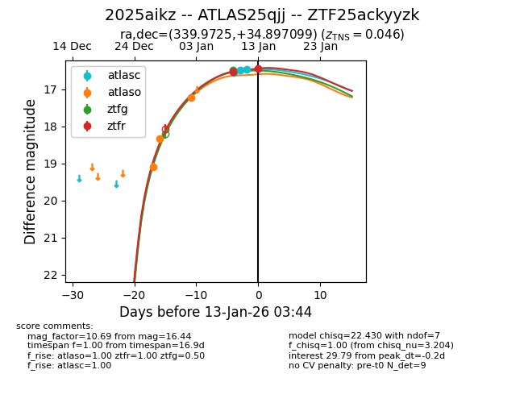
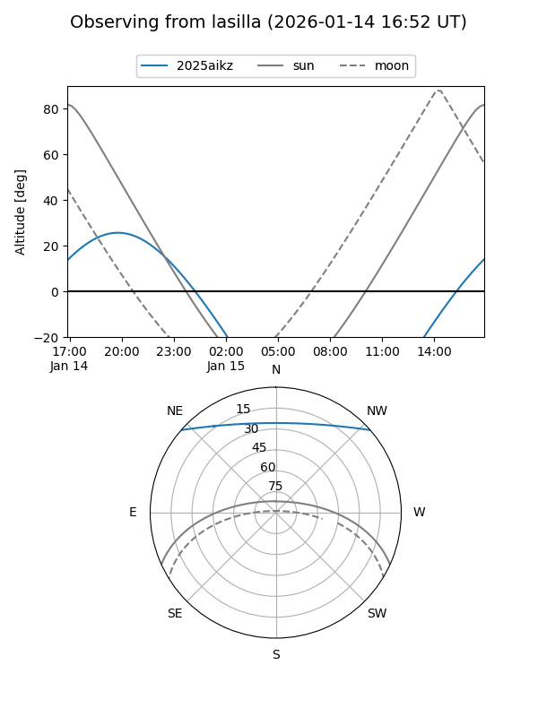
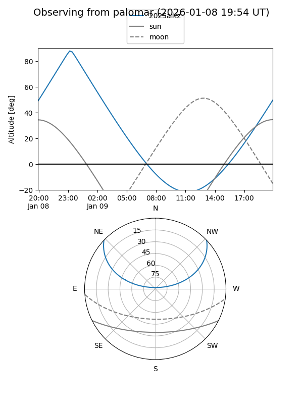
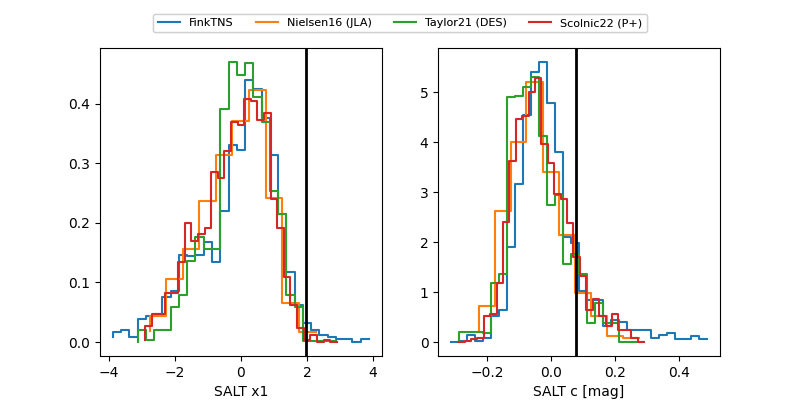

2025aikz
Target 2025aikz at 2026-01-19 04:15
Aliases and brokers:
FINK: link
Lasair: link
ALeRCE: link
TNS: link
YSE: link
alt names
ZTF25ackyyzk (ztf,fink_ztf)
2025aikz (tns,yse)
ATLAS25qjj (atlas)
Coordinates:
equatorial (ra, dec) = 339.9725,+34.89710
equatorial (HMS+DMS) = 22:39:53.40,+34:53:49.56
galactic (l, b) = (94.5195,-20.61588)
Flags:
confirmed ia
Photometry:
last atlasc=16.62, atlaso=17.21, ztfg=16.48, ztfr=16.51
5 atlasc, 3 atlaso, 2 ztfg, 4 ztfr detections
Lightcurve

Visibility


Additional plots
